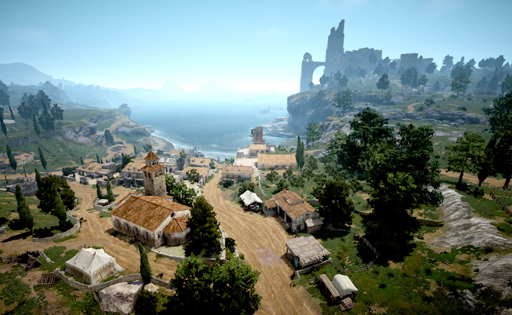
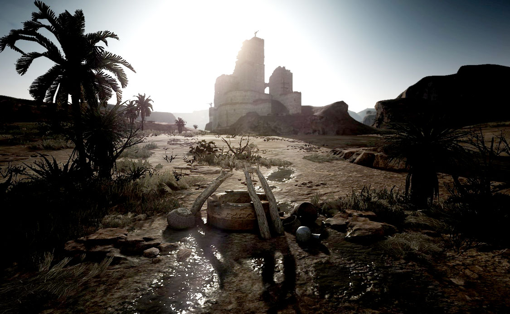

黑色魔石
神秘的「黑色魔石」建築了古代文明，
隨之而起的煉金術卻激起人性的貪婪，古代文明因此衰亡。
「黑色魔石」大量存在於卡爾佩恩(Calpheon)與瓦倫西亞(Valencia)間廣闊的沙漠地帶，
卡爾佩恩便將此地稱為「黑色沙漠」。為了爭奪這個資源，
卡爾佩恩發動多次戰爭，瓦倫西亞則因為這些戰爭犧牲了眾多士兵，
血流成河的慘痛歷史則讓它成為瓦倫西亞的「紅色沙漠」。
挾持龐大資本與商業立國的「卡爾佩恩」，以及絕對王政的「瓦倫西亞」，
隱藏的古代歷史與消失的記憶即將隨著探索一一揭曉。

